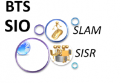

BTS SIO,
Qu'est ce que c'est ?

Le nouveau BTS SIO (Services Informatiques aux Organisations), créé à la rentrée 2011, remplace le BTS Informatique de Gestion.
Il forme les étudiants à la mise en place de solutions informatiques au sein des entreprises et comprend 2 options :
- solutions d’infrastructure, systèmes et réseaux,
- solutions logicielles et applications métiers.
Objectifs du BTS SIO
Le diplômé du BTS SIO (BTS Services informatiques aux organisations) est formé à la mise en place de services informatiques en tant que salarié au sein des organisations (entreprises, administrations, pme, pmi, etc…) soit en tant que consultant d’une SSII (société de services d’ingénierie informatique), d’une société éditrice de logiciels ou d’une société de conseils.
Les services informatiques dont il aura la responsabilité concernent à la fois les solutions techniques d’infrastructures, les applications logicielles, la maintenance et l’évolution de ces solutions dans le respect des contraintes légales et stratégiques, en s’appuyant sur des normes de sécurité ou des guides de bonnes pratiques.
Le BTS SIO (BTS Services informatiques aux organisations) prépare à 2 métiers distincts, représentés par les 2 spécialités du diplôme :
- Solutions d’infrastructures, systèmes et réseaux,
- Solutions logicielles et applications métiers.
BTS SIO spécialisation Solutions Logicielles et Applications Métiers (SLAM)
La spécialisation SLAM permet de réaliser des logiciels, des sites web, de rédiger de la documentation liée à la solution applicative, de former des utilisateurs et de gérer la maintenance applicative…
Débouchés de la spécialisation SLAM
Analyste d’application, Analyste d’études, Analyste programmeur, Développeur d’applications informatiques, Technicien d’études informatiques, Chargé d’étude…